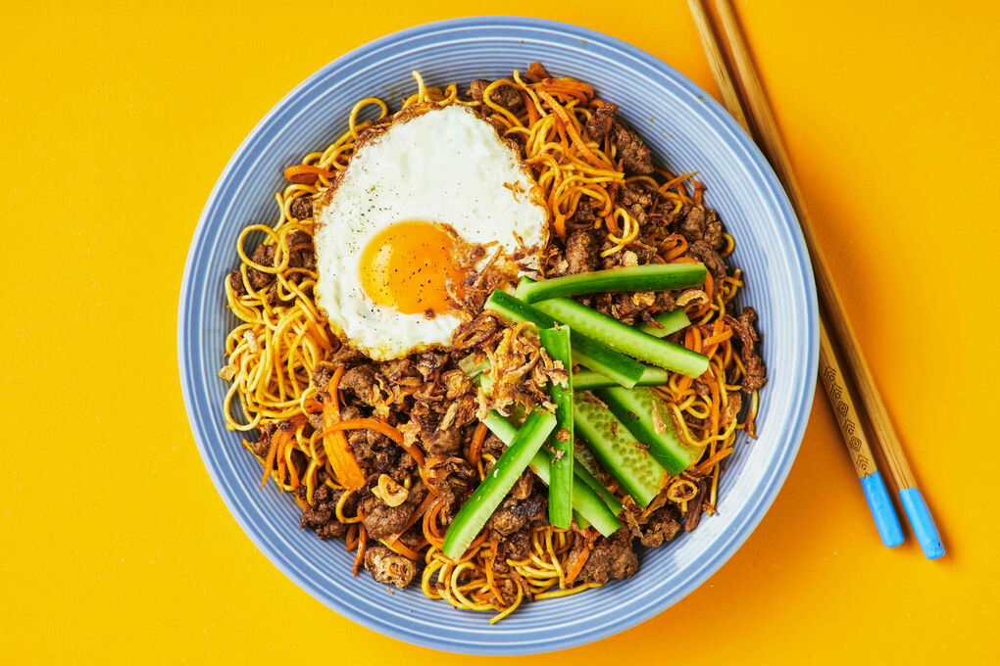

Mi Goreng

Description
Quick savoury noodles that is so godlike, its taken all over the world and loved by noodle and ramen enthusist.
Ingredients
- Pack of Mi Goreng
- Boiling Water
Steps
- Boil Water
- Cook noodles to desired hardness
- Add flavouring packets
- Mix Well